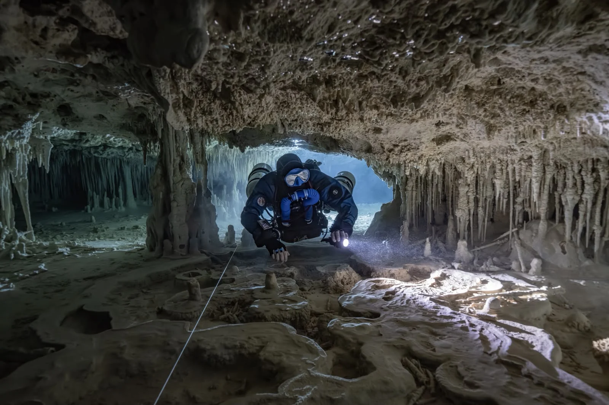
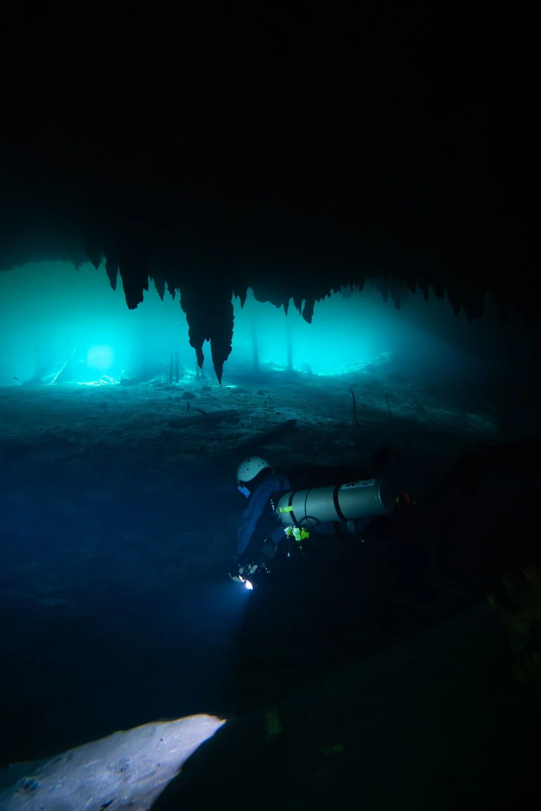
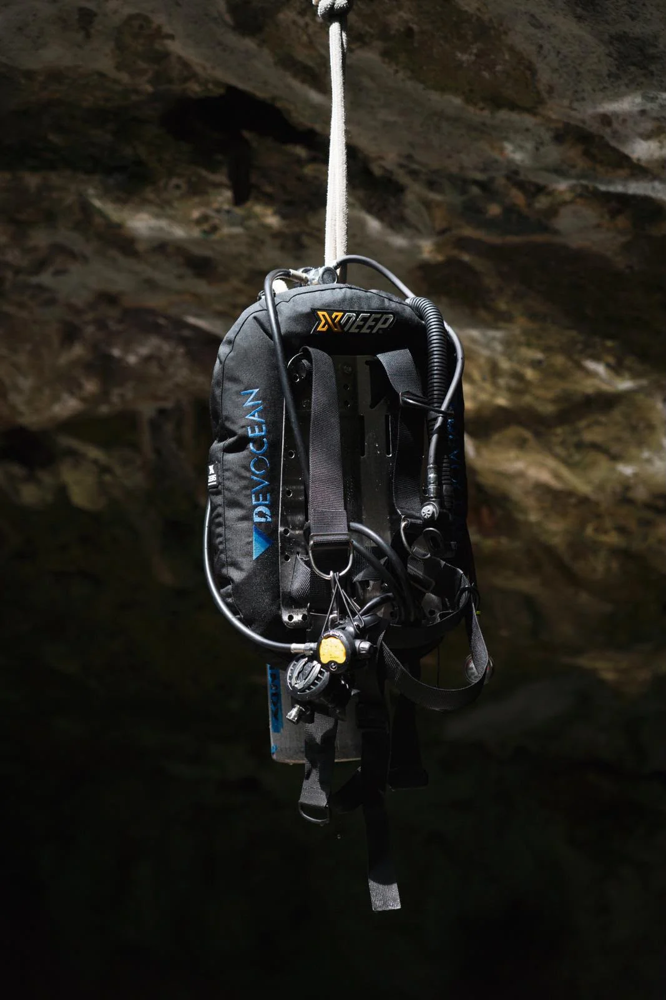
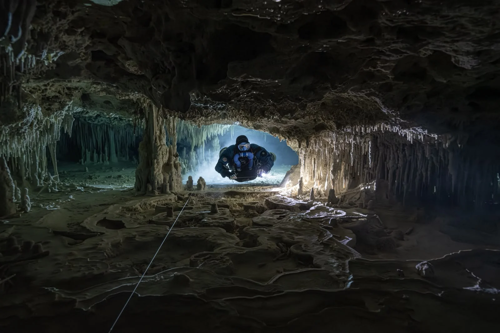

A different perspective.
Real caves, real dives, real moments with Devocean Divers Mexico.






Come along for the dive.
Your next chapter
starts underwater.
Tell us when you’re visiting and what you’d love to discover.
We’ll help you find the right dive.